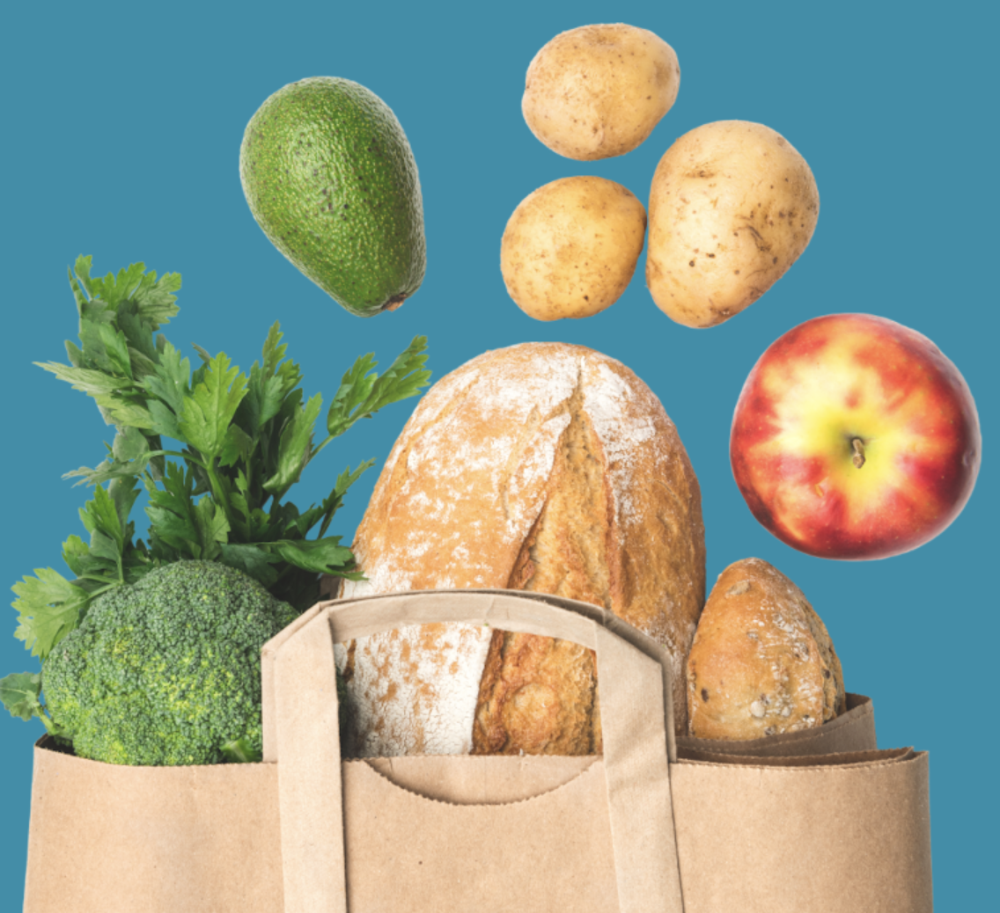

Welcome to the Food Pantry
To ensure members of the University of Michigan community—whether on a tight budget or physically restrained from getting to a grocery store—receive equitable access to healthy, nutritious, and nourishing food and the ability to prepare it for themselves or others. Check out the CAPS website for more information.
FAQs
- Did you know over 30% of U-M students struggle with food insecurity in some way? The food pantry is here to help anyone with a valid U-M ID.
- If you are thinking of coming but aren't sure then come on in anyway. Just look around or leave with a couple grocery bags, it is your choice. The food pantry is here to support you, however you need it. Choose a time that best suits you through the online appointment system.
- There is no limit on food. Take what you need, but eat what you take. We are set up like a grocery store, so you have free choice to choose what you prefer to eat. You might see suggested portions for certain food items. This is to help ensure we don’t run out of high-demand items.
Location and Hours
Located in the basement of the Betsy Barbour Residence Hall, please enter via the Maynard entrance only to ensure privacy for residents. Please contact us if you need ramp or elevator access. Address: 420 S State St Ann Arbor, MI 48109 Phone: 734-936-2794
Hours of Operation: Sunday: 2pm-6pm Monday - Thursday: 3pm-7pm Friday: 12pm-7pm Saturday: closed